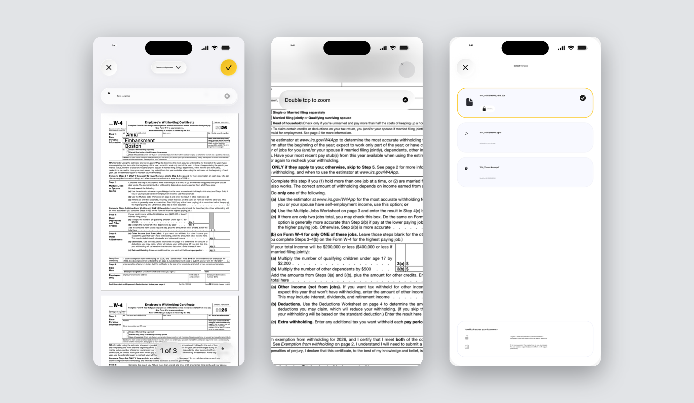
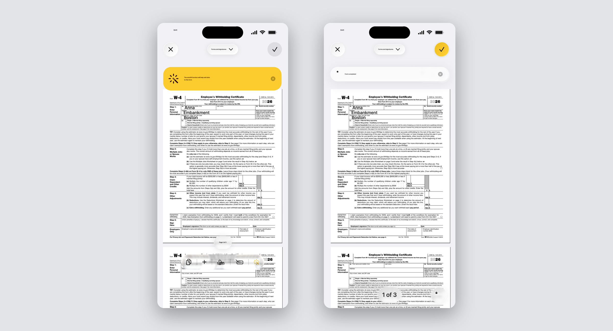
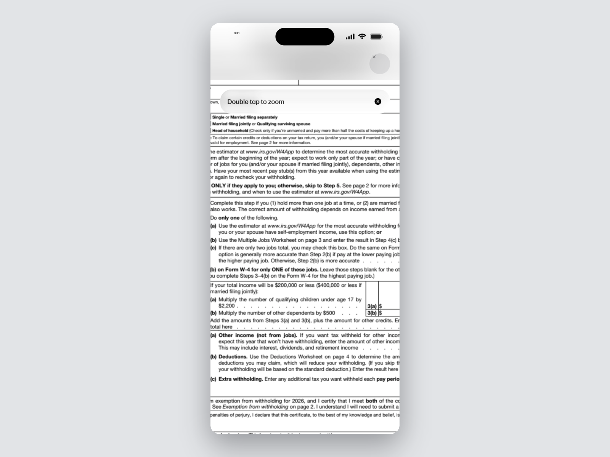
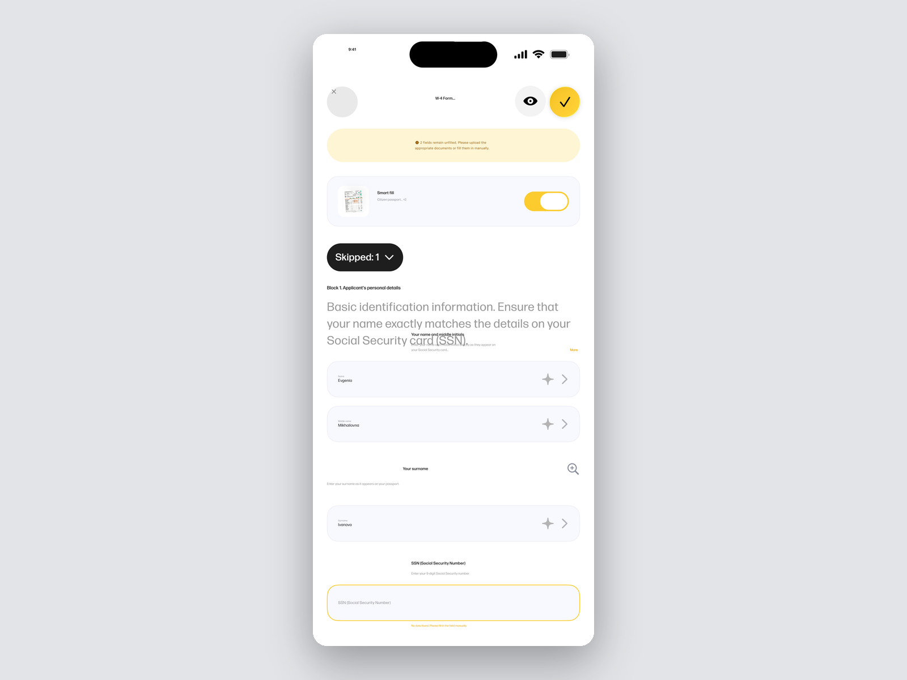
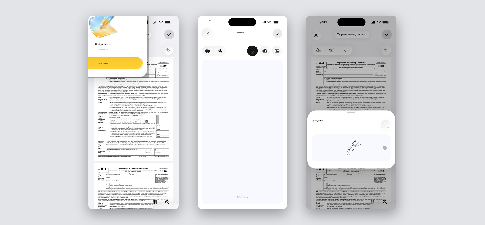
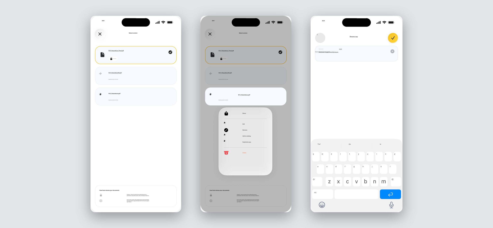

Hooh Smart Fill & Sign — from understanding a document to acting on it
After Hooh shipped the reading experience, the next gap was action. People understood their documents but still retyped the same data — name, ID, address, IBAN — into every new form. Smart Fill closes that gap: Hooh recognizes form fields and fills them with data already stored in the user's documents, then lets them sign and save without leaving the app.

Problem
Even when a document is clear, action still costs time. People retype the same personal data — name, ID, address, banking details — into every new form, search for where to sign, then convert the result to share or store. Reading was solved by the first release; everything that comes after was still manual
Task
Extend Hooh from a reading tool into a complete document workflow. Let users fill and sign any form on iOS using data already available in their previously uploaded documents — without losing control over what gets submitted
Users
The same audience as the first Hooh release — expats, digital nomads, and people without a legal background. Most of them process a handful of new forms every month: visa applications, lease agreements, school paperwork, banking contracts
Scope
Smart Fill mode with manual fallback, a signature flow that supports both drawing and camera capture, an explicit save and version model, and a set of supporting actions for managing pages and formats inside a document
Design process
The first Hooh release answered "what does this document say?" — sessions with the same cohort surfaced the next friction. People understood the document but still asked for help with the boring part: filling the fields, signing, sending back. The pattern across forms was the same — the data the user needed was almost always sitting in another document they had already uploaded. Smart Fill grew out of that observation: instead of asking the user to retype, recognize the fields and reuse what Hooh already knows.
The constraint shaping every decision below was trust. Auto-fill is only useful if the user can see what was filled, override it, and turn it off entirely. The whole flow was designed around that veto.
1. Smart Fill — automation with a veto
Hooh recognizes form fields and fills them from the user's stored documents. Nothing is submitted silently: a toggle disables Smart Fill for the whole form, every filled field can be tapped to see which source document it came from, and any value can be overridden in place. The flow defaults to "on" because the time saved is the point — but the user is always one tap away from manual mode


2. Fields Hooh doesn't know
When the source documents don't cover a field, the field stays highlighted instead of blocking the flow. The user can save a draft, come back later, or finish manually right then. The form never holds the user hostage to one missing answer, and an unfinished form is treated as a first-class state — not an error

3. Signature — draw once, reuse forever
Two entry points to a single signature object: draw it on the canvas or capture an existing one with the camera. Once captured, the signature becomes a reusable asset — Hooh places it in any future document with one tap, so the user only ever has to make the signature itself once

4. Saving without fear of overwriting
Three explicit paths instead of one ambiguous Save: update the current version, save a copy, or save as a new document. The original file is never touched without consent. Versions live inside the document, switchable from the nav bar, with rename available in place — so a user iterating on the same form keeps every state without cluttering the document list

Beyond the core flow
Supporting actions that round out the document workflow without taking the spotlight in the narrative. Each one was designed in scope, in the same visual language, and reachable from the same document screen.
Reorder pages
Drag pages into the right order without leaving the document
Rotate
Quick page rotation for scans that came in sideways
Add a page
Insert a new page from the camera or from another file in Hooh
Convert format
Change format from the document screen, including after edits
Outcome
The flow was designed end-to-end and handed off to engineering. The patterns held up in internal sessions with the same cohort as the first Hooh release — Smart Fill with a veto, a reusable signature, and explicit version saves all reinforced the same direction: the app removes the repetitive work while the user keeps the final word.
This scope didn't reach a public release as part of this engagement, but the design system, components and flows are documented and ready to ship when the product picks the work back up.